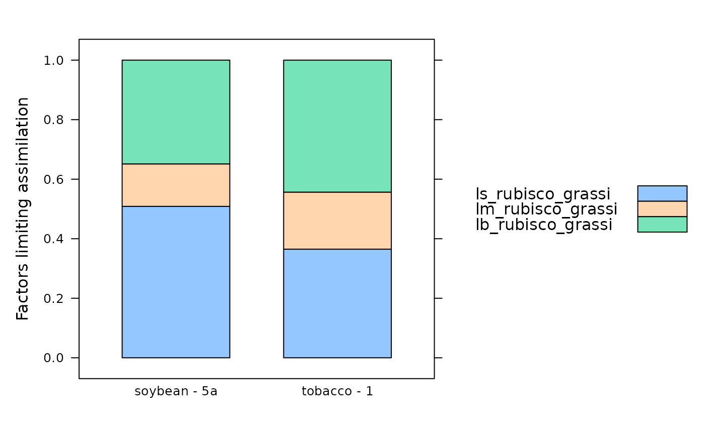

Estimate the relative limiting factors to C3 photosynthesis
calculate_c3_limitations_grassi.RdUses the method from Grassi & Magnani (2005) to estimate the relative limitations to C3 photosynthesis due to stomatal conductance, mesophyll conductance, and biochemistry. This function can accomodate alternative column names for the variables taken from the data file in case they change at some point in the future. This function also checks the units of each required column and will produce an error if any units are incorrect.
Usage
calculate_c3_limitations_grassi(
exdf_obj,
Wj_coef_C = 4.0,
Wj_coef_Gamma_star = 8.0,
cc_column_name = 'Cc',
gamma_star_column_name = 'Gamma_star_tl',
gmc_column_name = 'gmc_tl',
gsc_column_name = 'gsc',
kc_column_name = 'Kc_tl',
ko_column_name = 'Ko_tl',
oxygen_column_name = 'oxygen',
total_pressure_column_name = 'total_pressure',
vcmax_column_name = 'Vcmax_tl',
j_column_name = NULL
)Arguments
- exdf_obj
An
exdfobject representing gas exchange data.- Wj_coef_C
A coefficient in the equation for RuBP-regeneration-limited carboxylation, whose value depends on assumptions about the NADPH and ATP requirements of RuBP regeneration; see
calculate_c3_assimilationfor more information.- Wj_coef_Gamma_star
A coefficient in the equation for RuBP-regeneration-limited carboxylation, whose value depends on assumptions about the NADPH and ATP requirements of RuBP regeneration; see
calculate_c3_assimilationfor more information.- cc_column_name
The name of the column in
exdf_objthat contains the chloroplastic CO2 concentration inmicromol mol^(-1). Typically these are values that are automatically calculated byfit_c3_aci.- gamma_star_column_name
The name of the column in
exdf_objthat contains theGamma_starvalues inmicromol mol^(-1). Typically these are the leaf-temperature dependent values that are automatically calculated byfit_c3_aci.- gmc_column_name
The name of the column in
exdf_objthat contains the mesophyll conductance to CO2 inmol m^(-2) s^(-1) bar^(-1). Typically these are the leaf-temperature adjusted values that are automatically calculated byfit_c3_aci.- gsc_column_name
The name of the column in
exdf_objthat contains the stomatal conductance to CO2 inmol m^(-2) s^(-1). Typically this column is calculated usingcalculate_gas_properties.- kc_column_name
The name of the column in
exdf_objthat contains the Michaelis-Menten constant for rubisco carboxylation inmicromol mol^(-1). Typically these are the leaf-temperature dependent values that are automatically calculated byfit_c3_aci.- ko_column_name
The name of the column in
exdf_objthat contains the Michaelis-Menten constant for rubisco oxygenation inmmol mol^(-1). Typically these are the leaf-temperature dependent values that are automatically calculated byfit_c3_aci.- oxygen_column_name
The name of the column in
exdf_objthat contains the concentration of O2 in the ambient air, expressed as a percentage (commonly 21% or 2%); the units must bepercent.- total_pressure_column_name
The name of the column in
exdf_objthat contains the total pressure inbar. Typically this is calculated usingcalculate_total_pressure.- vcmax_column_name
The name of the column in
exdf_objthat contains values of the maximum Rubisco carboxylation rate (Vcmax) inmicromol m^(-2) s^(-1). Typically these are the leaf-temperature adjusted values that are automatically calculated byfit_c3_aci.- j_column_name
The name of the column in
exdf_objthat contains values of the RuBP regeneration rate (J) inmicromol m^(-2) s^(-1). Typically these are the leaf-temperature adjusted values that are automatically calculated byfit_c3_aci.
Details
When analyzing or interpreting C3 gas exchange data, it is often useful to
estimate the relative limitations to assimilation that are due to stomatal
conductance, mesophyll conductance, and biochemistry. This can be done using
a framework first introduced by Grassi & Magnani (2005). In this framework,
the relative limitation due to stomatal conductance (ls) is
ls = [(g_t / g_sc) * (dAdC)] / [g_t + dAdC],
the relative limitation due to mesophyll conductance (lm) is
lm = [(g_t / g_mc) * (dAdC)] / [g_t + dAdC],
and the relative limitation due to biochemistry (lb) is
ln = [g_t] / [g_t + dAdC],
where g_sc is the stomatal conductance to CO2, g_mc is the
mesophyll conductance to CO2, gt = 1 / (1 / g_mc + 1 / g_sc) is the
total conductance to CO2, and dAdC is the partial derivative of the
net CO2 assimilation rate (An) with respect to the chloroplast CO2
concentration (Cc). These can be found in Equation 7 from Grassi &
Magnani (2005).
These equations were derived by assuming that CO2 assimilation is limited by Rubisco activity; in other words, that the net CO2 assimilation rate is given by
Ac = Vcmax * (Cc - Gamma_star) / (Cc + Km) - RL,
where Vcmax is the maximum Rubisco carboxylation rate,
Gamma_star is the CO2 compensation point in the absence of day
respiration, RL is the day respiration rate, Km is the effective
Michaelis-Menten constant for Rubisco carboxylation. In turn, Km is
given by Km = Kc * (1 + O / Ko), where Kc is the
Michaelis-Menten constant for carboxylation, Ko is the Michaelis-Menten
constant for oxygenation, and O is the oxygen concentration in the
chloroplast.
Under this assumption, it is possible to analytically determine the partial
derivative dAdC:
dAdC_rubisco = Vcmax * (Gamma_star + Km) / (Cc + Km)^2
In this case, the limitation due to "biochemistry" actually refers to
limitation due to the value of Vcmax. Note that sometimes this
derivative is estimated from the initial slope of a measured A-Ci curve rather
than calculated analytically. (See, for example, Pathare et al. (2023).)
However, we do not take that approach here. Also note that the value of
Vcmax can be estimated using different approaches. For example, Xiong
(2023) uses single-point gas exchange measurements. When possible, it would be
better to use an estimate from fitting an entire A-Ci curve, as shown in the
example below.
To understand the meaning of these limiting factors, note that simultaneously
making small fractional increases to g_sc, g_mc, and
Vcmax will generally cause an associated small fractional increase in
An. The limiting factors describe the fraction of the increase in
An that can be attributed to each of g_sc, g_mc, and
Vcmax. For example, ls = 0.2, lm = 0.3, lb = 0.5 would mean that
20 percent of the increase in An would be due to an increase in
stomatal conductance, 30 percent due to an increase in mesophyll conductance,
and 50 percent due to an increase in Vcmax. Note that ls,
lm, and lb always add up to 1.
Thus, when one of the factors is large, changes in the related parameter
produce relatively larger changes in the assimilation rate. In that case, it
can be said that that parameter is setting a large limit on the assimilation
rate. On the other hand, if a factor is small, small changes in the related
parameter produce relatively small changes in An, and therefore that
parameter is not setting a large limit on the assimilation rate.
It is also possible to calculate dAdC when assimilation is limited by
RuBP regeneration. In this case, we have
Aj = J * (Cc - Gamma_star) / (4 * Cc + 8 * Gamma_star) - RL,
where J is the RuBP regeneration rate, and the limitation due to
"biochemistry" actually refers to limitation due to the value of J
(rather than Vcmax. The same equations as before can be used to
calculate the limiting factors (ls, lm, lb), but the
partial derivative is now given by
dAdC_j = J * Gamma_star * 12 / (4 * Cc + 8 * Gamma_star)^2.
Most users will want the limitations assuming Rubisco-limited assimilation.
However, if j_column_name is not NULL, values of J will
be used to calculate the limiting factors assuming RuBP-regeneration-limited
assimilation. For an example of how these additional factors can be used, see
Sakoda et al. (2021).
References:
Grassi, G. & Magnani, F. "Stomatal, mesophyll conductance and biochemical limitations to photosynthesis as affected by drought and leaf ontogeny in ash and oak trees." Plant, Cell & Environment 28, 834–849 (2005) [doi:10.1111/j.1365-3040.2005.01333.x ].
Pathare, V. S. et al. "Altered cell wall hydroxycinnamate composition impacts leaf- and canopy-level CO2 uptake and water use in rice." Plant Physiology kiad428 (2023) [doi:10.1093/plphys/kiad428 ].
Xiong, D. "Leaf anatomy does not explain the large variability of mesophyll conductance across C3 crop species." The Plant Journal 113, 1035–1048 (2023) [doi:10.1111/tpj.16098 ].
Sakoda, K., Yamori, W., Groszmann, M. & Evans, J. R. "Stomatal, mesophyll conductance, and biochemical limitations to photosynthesis during induction." Plant Physiology 185, 146–160 (2021) [doi:10.1093/plphys/kiaa011 ].
Value
This function returns an exdf object based on exdf_obj but with
several new columns representing the partial derivatives and limiting factors
discussed above: dAdC_rubisco, ls_rubisco_grassi,
lm_rubisco_grassi, and lb_rubisco_grassi. If
j_column_name is not NULL, the output will also include
dAdC_j, ls_j_grassi, lm_j_grassi, and lb_j_grassi.
Examples
# Read an example Licor file included in the PhotoGEA package
licor_file <- read_gasex_file(
PhotoGEA_example_file_path('c3_aci_1.xlsx')
)
# Define a new column that uniquely identifies each curve
licor_file[, 'species_plot'] <-
paste(licor_file[, 'species'], '-', licor_file[, 'plot'] )
# Organize the data
licor_file <- organize_response_curve_data(
licor_file,
'species_plot',
c(9, 10, 16),
'CO2_r_sp'
)
# Calculate the total pressure in the Licor chamber
licor_file <- calculate_total_pressure(licor_file)
# Calculate additional gas properties
licor_file <- calculate_gas_properties(licor_file)
# Calculate temperature-dependent values of C3 photosynthetic parameters
licor_file <- calculate_temperature_response(licor_file, c3_temperature_param_bernacchi)
# Fit all curves in the data set. Here we use a faster optimizer than the
# default one to ensure the example runs quickly.
aci_results <- consolidate(by(
licor_file,
licor_file[, 'species_plot'],
fit_c3_aci,
Ca_atmospheric = 420,
optim_fun = optimizer_nmkb(1e-7),
fit_options = list(gmc_at_25 = 0.5)
))
# Get a subset of fitting results corresponding to the first measured point
# in each curve (where CO2_r_sp = 400 ppm)
aci_fit_subset <- aci_results$fits[aci_results$fits[, 'CO2_r_sp'] == 400, , TRUE]
# Calculate limiting factors
aci_fit_subset <- calculate_c3_limitations_grassi(aci_fit_subset)
# View the limiting factors for each species / plot
col_to_keep <- c(
'species', 'plot', # identifiers
'ls_rubisco_grassi', 'lm_rubisco_grassi', 'lb_rubisco_grassi' # limitation info
)
aci_fit_subset[ , col_to_keep, TRUE]
#>
#> Converting an `exdf` object to a `data.frame` before printing
#>
#> species [UserDefCon] (NA) plot [UserDefCon] (NA)
#> 8 soybean 5a
#> 21 tobacco 1
#> 34 tobacco 2
#> ls_rubisco_grassi [calculate_c3_limitations_grassi] (dimensionless)
#> 8 0.5089481
#> 21 0.3651309
#> 34 NA
#> lm_rubisco_grassi [calculate_c3_limitations_grassi] (dimensionless)
#> 8 0.1426870
#> 21 0.1917726
#> 34 NA
#> lb_rubisco_grassi [calculate_c3_limitations_grassi] (dimensionless)
#> 8 0.3483649
#> 21 0.4430964
#> 34 NA
# One of these fits has NA for all the limiting factors, which causes problems
# when making bar charts with some versions of the `lattice` package, so we
# exclude that curve for plotting
data_for_barchart <-
aci_fit_subset$main_data[aci_fit_subset$main_data$species_plot != 'tobacco - 2', ]
# Display as a bar chart
lattice::barchart(
ls_rubisco_grassi + lm_rubisco_grassi + lb_rubisco_grassi ~ species_plot,
data = data_for_barchart,
stack = TRUE,
auto = TRUE,
ylab = 'Factors limiting assimilation'
)
